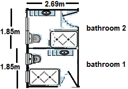
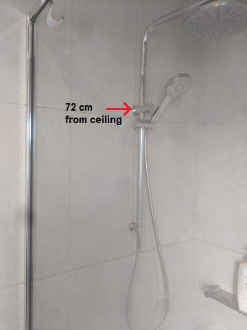

Work is renovation of two side-by-side bathrooms in a house in Blackburn South. Work should start on 5 September 2023 (a day
after settlement) but site inspection can be done some time in early July (to be announced later).
The longer-term plan is to rebuild the whole house within 2 years, so for now we just want something simple and inexpensive.
The Old Bathrooms
 Figure 1: The old bathrooms
Figure 1: The old bathrooms
Bathroom 1
 Figure 4: Bathroom 1 shower
Figure 4: Bathroom 1 shower
|
 Figure 4: Bathroom 1 toilet
Figure 4: Bathroom 1 toilet
|
 Figure 4: Bathroom 1 vanity
Figure 4: Bathroom 1 vanity
|
Bathroom 2
 Figure 5: Bathroom 2 bathtub (to be replaced with a shower)
Figure 5: Bathroom 2 bathtub (to be replaced with a shower)
|
 Figure 6: Bathroom 2 toilet
Figure 6: Bathroom 2 toilet
|
Scope of Work
Bathroom 1
- Remove separator between toilet and shower
- Remove toilet, shower and vanity
- Repaint drywalls
- Install new shower (900mm x 1200mm or longer), toilet and vanity
- Install wall tiles only on the wall inside the shower and on top of the vanity
- Can we keep the current floor tiles?
Bathroom 2
- Remove toilet, bathtub and vanity
- Repaint drywalls
- Install new shower (900mm x 1200mm or longer) (we don't want a bathtub), toilet and vanity
- Install wall tiles only on the wall inside the shower and on top of the vanity
- Can we keep the current floor tiles?
The floor plans for the new bathrooms are shown in Figures 7a and 7b. Either is fine, 7a is preferred if the price difference
is not substantial. 7b keeps the current layout.
 Figure 7a: The new bathrooms
Figure 7a: The new bathrooms

Figure 7b: The new bathrooms
The current bathrooms have a window, and bathroom 1 will have a shower on the same wall as the window. Figure 8 shows
a sample shower with two support braces. The upper brace is 72cm from the ceiling, low enough to get around the window.

Figure 8: Idea for shower